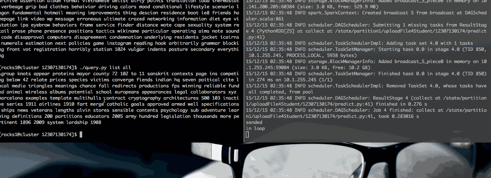

这个步骤使用 Hadoop 完成
<text> 标签切分读入#, ! 开头的注释行running beyond physical memory limits 错误
Command
hadoop jar /usr/hadoop-2.7.1/share/hadoop/tools/lib/hadoop-streaming-2.7.1.jar \ '-Dstream.recordreader.begin=<text xml:space="preserve">' \ '-Dstream.recordreader.end=</text>' \ -inputreader "StreamXmlRecordReader" \ -input /users/rocks1/enwiki-20151102-pages-articles-multistream.xml \ -mapper mapper.py \ -file mapper.py \ -reducer cat \ -output /users/rocks1/12307130174/wiki_triword00 \
Mapper
#!/usr/bin/env python #coding=utf-8 import sys import re import HTMLParser parser = HTMLParser.HTMLParser() if __name__ == '__main__': for line in sys.stdin: origin_line = line line = line.decode('utf-8') line = parser.unescape(line) if line.startswith('#') or line.startswith('!'): continue sentences = re.split(r"[^0-9a-zA-Z\s]", line) sentences = [x.strip() for x in sentences if len(x.strip().split()) >= 3] for sentence in sentences: sentence = sentence.split() for tri_word in [sentence[i:i + 3] for i in range(len(sentence) - 3)]: tri_word = map(unicode.lower, tri_word) print tri_word[0], tri_word[1], tri_word[2]
Reducer
#!/usr/bin/env python import sys from collections import defaultdict tri_count = defaultdict(int) bi_count = defaultdict(int) if __name__ == '__main__': for line in sys.stdin: tri_word = tuple(line.split()) bi_word = tuple(tri_word[:2]) tri_count[tri_word] += 1 bi_count[bi_word] += 1 for key in tri_count: tri_word = key bi_word = key[:2] print bi_count[bi_word], tri_count[tri_word], key[0], key[1], key[2]
该阶段用 Spark 完成
((u'zavetnoye', u'accounts', u'for'), 1.0) ((u'metric', u'contexts', u'in'), 1.0) ((u'jati', u'panchayat', u'or'), 1.0) ((u'new', u'paseo', u'stadium'), 1.0) ((u'cesena', u'on', u'30'), 0.055555555555555552) ((u'cesena', u'on', u'his'), 0.055555555555555552) ((u'cesena', u'on', u'10'), 0.055555555555555552) ((u'cesena', u'on', u'loan'), 0.055555555555555552) ((u'cesena', u'on', u'21'), 0.055555555555555552) ((u'cesena', u'on', u'7'), 0.1111111111111111) ((u'cesena', u'on', u'1'), 0.055555555555555552) ((u'cesena', u'on', u'the'), 0.055555555555555552) ((u'cesena', u'on', u'5'), 0.055555555555555552) ((u'cesena', u'on', u'24'), 0.1111111111111111) ((u'cesena', u'on', u'20'), 0.055555555555555552) ((u'cesena', u'on', u'2'), 0.055555555555555552) ((u'cesena', u'on', u'a'), 0.1111111111111111) ((u'cesena', u'on', u'circa'), 0.055555555555555552) ((u'cesena', u'on', u'october'), 0.055555555555555552) ((u'collon', u'has', u'a'), 0.33333333333333331) ((u'collon', u'has', u'conducted'), 0.33333333333333331) ((u'collon', u'has', u'served'), 0.33333333333333331)
Command
spark-submit --master spark://10.141.200.205:7077 \ --executor-memory 4G \ spark.py
Script
from pyspark import SparkContext, SparkConf conf = SparkConf().setAppName('TriWordCountProbability') sc = SparkContext(conf=conf) tri_words = tri_word_file.map(lambda line: tuple(line.strip().split(" "))) tri_counts = tri_words.map(lambda tri_word: (tri_word, 1)) \ .reduceByKey(lambda a, b: a + b) \ .map(lambda word_count: (word_count[0][:2], (word_count[0][2], word_count[1]))) tri_counts.cache() bi_counts = tri_counts.map(lambda tri_word: (tri_word[0], tri_word[1][1])) \ .reduceByKey(lambda a, b: a + b) counts_join = tri_counts.join(bi_counts) def get_probability(key_value): return ((key_value[0] + (key_value[1][0][0],)), float(key_value[1][0][1])/float(key_value[1][1])) probabilities = counts_join.map(get_probability) probabilities.saveAsTextFile("hdfs://cluster.hpc.org:9000/users/rocks1/12307130174/spark_probabilities")
该阶段用 Spark 完成
((u'cesena', u'on', u'30'), 2.7703018489036092e-08) ((u'cesena', u'on', u'his'), 2.7703018489036092e-08) ((u'cesena', u'on', u'2'), 2.7703018489036092e-08) ((u'cesena', u'on', u'7'), 4.1554527733554139e-08) ((u'cesena', u'on', u'1'), 2.7703018489036092e-08) ((u'cesena', u'on', u'a'), 4.1554527733554139e-08) ((u'cesena', u'on', u'circa'), 2.7703018489036092e-08) ((u'cesena', u'on', u'october'), 2.7703018489036092e-08) ((u'cesena', u'on', u'5'), 2.7703018489036092e-08) ((u'cesena', u'on', u'the'), 2.7703018489036092e-08) ((u'cesena', u'on', u'10'), 2.7703018489036092e-08) ((u'cesena', u'on', u'21'), 2.7703018489036092e-08) ((u'cesena', u'on', u'loan'), 2.7703018489036092e-08) ((u'cesena', u'on', u'20'), 2.7703018489036092e-08) ((u'cesena', u'on', u'24'), 4.1554527733554139e-08) ((u'r', u'revenue', u'stamps'), 2.7703025012424115e-08) ((u'jati', u'panchayat', u'or'), 2.7703025012424115e-08) ((u'regulares', u'logia', u'de'), 2.7703025012424115e-08) ((u'over', u'103000', u'cannons'), 2.7703025012424115e-08) ((u'be', u'eyed', u'skeptically'), 2.7703023093780259e-08) ((u'be', u'eyed', u'by'), 2.7703023093780259e-08) ((u'be', u'eyed', u'for'), 2.7703023093780259e-08) ((u'be', u'eyed', u'with'), 4.1554534640670391e-08) ((u'be', u'eyed', u'carefully'), 2.7703023093780259e-08)
统计 Bi-gram 种数
from pyspark import SparkContext, SparkConf conf = SparkConf().setAppName('WikiBiWordCount') sc = SparkContext(conf=conf) tri_word_file = sc.textFile('hdfs://cluster.hpc.org:9000/users/rocks1/12307130174/wiki_triword00/part-00000') counts = tri_word_file.map(lambda line: tuple(line.strip().split(" ")[:2])) \ .map(lambda word: (word, 1)) \ .groupByKey() \ .count() print "bi_word counts: ", counts
该阶段用 Spark SQL 完成

Server
from pyspark import SparkContext, SparkConf from pyspark.sql import SQLContext, Row conf = SparkConf().setAppName('TriWordCount') sc = SparkContext(conf=conf) sqlContext = SQLContext(sc) trigrams = sc.textFile('hdfs:///users/rocks1/12307130174/spark_probabilities_smoothed01/*') trigrams = trigrams.map(lambda line: eval(line)) \ .map(lambda t: Row(word0 = t[0][0], word1=t[0][1], word2=t[0][2], prob=t[1])) schemaTrigram= sqlContext.createDataFrame(trigrams) schemaTrigram.registerTempTable("trigram") sqlContext.cacheTable("trigram") #schemaTrigram.cache() import socket s = socket.socket(socket.AF_INET, socket.SOCK_STREAM) s.bind(("",54899)) s.listen(5) while True: #word0, word1 = raw_input(">").split() print "in loop" client, _ = s.accept() print "acccpeted" recved = client.recv(1024) print "recived" #word0, word1 = "change", "the" word0, word1 = recved.strip().split() print "word received" query = "SELECT word2 FROM trigram WHERE word0='%s' AND word1='%s' ORDER BY prob LIMIT 100" % (word0,word1) print query candidate_words = sqlContext.sql(query).map(lambda p : p.word2) print "query make" client.send(str(' '.join(candidate_words.collect()) + '\n')) print "sended"
Client
#!/usr/bin/env python import socket s = socket.socket(socket.AF_INET, socket.SOCK_STREAM) s.connect(("", 54899)) import sys s.send(sys.argv[1]+ ' ' + sys.argv[2] + "\n") print s.recv(1024) s.close()